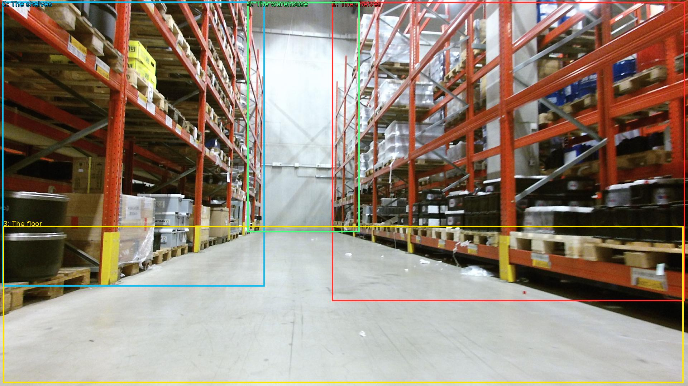

The image shows a large warehouse with rows of orange metal shelves. The shelves are filled with various items such as boxes, containers, and other storage containers. The floor is made of concrete and the walls are painted white. The warehouse appears to be well-lit with fluorescent lights. The overall atmosphere of the space is industrial and organized.

Original · Caption raw · Grounding raw · Koordinate
Številke so lokalni ID regije. Dolge slikovne oznake so skrajšane; spodaj so celotne fraze. Napovedane regije se lahko prekrivajo ali opisujejo skupine.
| ID | Celotna fraza | bbox xyxy |
|---|---|---|
| 1 | The shelves | [926.3999633789062, 5.940000057220459, 1911.3599853515625, 842.9400634765625] |
| 2 | The shelves | [6.71999979019165, 4.860000133514404, 738.239990234375, 801.9000244140625] |
| 3 | The floor | [8.639999389648438, 632.3400268554688, 1907.5198974609375, 1071.9000244140625] |
| 4 | The warehouse | [690.239990234375, 5.940000057220459, 1003.199951171875, 649.6200561523438] |